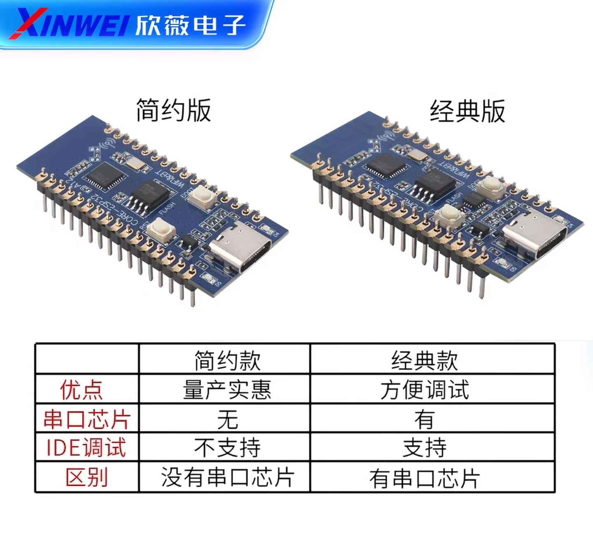

先确认适用的板子
我把固件、烧录工具和操作步骤整理在这个包中，供使用合宙 ESP32C3-CORE 简约版的读者安装。本固件适用于下图左侧简约版：USB-C 直连 ESP32-C3，没有额外的 CH343 串口芯片。包内预编译固件对应这款板子。板载 BOOT 键和 D4 指示灯直接用于模式切换及状态显示，不需要焊接。

已经完成软件编译与镜像校验；发布时尚未取得实物板，因此烧录、BLE 广播和手机 App 识别仍待实机验收。第一次广播所用的地址类型、PDU 类型与广播/扫描响应分界来自一份 nRF Connect 报告的推断。
一、包里有什么、需要准备什么
MBeacon_LuatOS_C3_USB_full_4MB.bin：首次烧录选这一个。...app_only_0x10000.bin：以后进阶更新用。flash_download_tool/flash_download_tool_3.9.11.exe：乐鑫图形化烧录工具。OpenSerialConsole.cmd：串口查看及发命令。完整 Arduino/PlatformIO 工程、NimBLE 库与技术分析。普通烧录不需要编译。
另需 Windows 10/11 电脑、一根真正能传数据的 USB-C 线、ESP32-C3 简约版开发板。手机若要查看 BLE 广播，安装 nRF Connect for Mobile。简约版在 Windows 10/11 通常使用系统 USB 驱动；不用安装 CH343 驱动。
- 在下载的 ZIP 上右键 → 全部解压缩，放在桌面等普通文件夹。不要在压缩包预览里运行 EXE。
- 用数据线把板子插到电脑。在桌面或文件资源管理器中右键“此电脑”（旧称“我的电脑”） → 管理 → 设备管理器 → 展开 端口 (COM 和 LPT)，记录新出现的
COM数字，例如 COM5。拔插一次可看哪项消失又出现。
二、第一次烧录
- 双击
tools/flash_download_tool/flash_download_tool_3.9.11.exe。打开的第一个窗口选 ChipType = ESP32-C3、WorkMode = Develop、LoadMode = USB，再点 OK。 - 在烧录页面第一行点路径右侧 …，选择
firmware/MBeacon_LuatOS_C3_USB_full_4MB.bin；勾选这一行左边方框。地址填0x0。其他固件行别勾选。 - 选 SPI SPEED = 40MHz、SPI MODE = DIO。3.9.11 若将 SPI SPEED / SPI MODE 显示为灰色，以镜像自带的 DIO/40MHz 参数为准。如果有 DoNotChgBin，把它勾上。COM 选设备管理器记下的端口；BAUD 先用 115200。
- 点 START，等待显示 FINISH/完成。如果卡在等待连接：按住板上 BOOT，再短按 RST，先松 RST、最后松 BOOT，然后重试 START。进入下载模式后 COM 号若变了，重新选择新的 COM 口。
- 完成后关掉烧录工具，短按一次 RST 运行程序。正常应看到板载 D4 慢闪，然后可用手机扫描 MBeacon。
全量文件从 0x0 烧录，可能覆盖之前的 NVS 学习数据。若已用旧版成功学习且想保留数据，只更新程序时选 app-only 文件、地址 0x10000；第一次烧录仍必须选 full 文件、地址 0x0。app_only_0x10000.bin 仅供熟悉后更新程序并保留数据使用；第一次不要选它，也绝对不要把它写到 0x0。
三、每天怎么扫描与判断成功
上电默认模拟，D4 每 700 毫秒翻转一次。
正常运行时短按 BOOT 一次。每 150 毫秒翻转一次；未扫到完整目标数据就一直扫描。
固件已收到目标 MAC 的完整广播与扫描响应。新值已写入并读回 NVS；旧值相同也算成功。广播启动后灯长亮 3 秒、短灭 0.2 秒，随后回到慢闪。
- 每天让原设备在附近，给开发板供电并等 D4 慢闪。
- 短按板载 BOOT 一次，看到 D4 快闪。观察约半分钟即可：若出现 3 秒长亮，代表这次确实收到可重播的完整数据；随后自动恢复模拟慢闪，不用再按键。
- 如果半分钟后仍快闪，表示尚未成功，固件会继续扫描，不会误报成功。把原设备靠近板子，保持供电继续等；需要停止时再短按 BOOT，回到之前已保存的数据广播，但这次没有成功灯号。
这份目标样本要求同时收到 ADV 中的 iBeacon 厂商字段、Scan Response 中的 0xFDA5 服务数据和 MBeacon 名称。只看到目标 MAC、只收到半包或 NVS 写入失败，都不会触发长亮。目标数据几天才变化一次也没关系：只要本次收到了完整有效数据，即使字节没变，也会给出成功灯号。首次学习还会替换预置样本中的推断类型。
短按 BOOT 必须在固件正常启动之后。按住 BOOT 再按 RST 是进入烧录模式；此时不会扫描或广播，单独按 RST 返回。
手机查看广播
- 打开 nRF Connect，允许蓝牙和附近设备权限，点击 SCAN。
- 搜索 MBeacon 或
C3:00:00:1B:95:0F，展开看 Raw Data、Manufacturer Data 和 Service Data。 - 若要比较原设备与本板，先让原设备断电或远离，避免两个同地址设备同时广播而让手机混淆。
电脑查看扫描数据和发送命令
- 先关闭烧录工具，同一 COM 口不能被两个软件同时占用。
- 双击
tools/OpenSerialConsole.cmd；按提示输入 COM 口，如 COM5，回车。通信速率为 115200。 - 键入命令后回车；按 Esc 退出。串口会自动把本次文字保存在
tools/serial_capture_日期时间.txt。
| 命令 | 作用 |
|---|---|
INFO | 查看当前模式、保存的 MAC、ADV、Scan Response、来源和时间。 |
SCAN | 开始扫描学习目标 MAC；输出 MAC/RSSI/广告类型/UUID/厂商数据/服务数据/原始数据。新值会输出 OLD、NEW、UPDATED 并写入/读回 NVS；没变则直接确认。两种情况都会长亮 3 秒并自动返回广播。 |
START / STOP | 开始广播 / 停止广播。 |
LOG | 把板内 /scan_log.txt 输出到串口。日志含时间、MAC、RSSI、ADV、响应数据。 |
SAMPLE | 把内置的 61 字节 MBeacon 样本重新写入 NVS，并立即广播。 |
CLEAR | 清空保存的数据和日志并停止；重启不会自动恢复样本。之后可以 SCAN 或 SAMPLE。 |
TIME 1791900000 | 可选：用实际 Unix 秒数设置当次运行的日志时间；断电后需重设。 |
四、现在复制的内容与限制
我依据一份 nRF Connect 扫描记录制作了内置样本，原始 AD 数据共 61 字节。按传统广播 AD 字段推断为 30 字节 ADV 加 31 字节 Scan Response：
ADV (30 B): 0201061AFF4C000215FDA50693A4E24FB1AFCFC6EB0764782527D948E3C5 RSP (31 B): 020A000303A5FD0E16A5FD6427D948E3C300001B950F08094D426561636F6E
包含 Flags、iBeacon 格式厂商字段、服务 UUID、服务数据、MBeacon 名称。地址尝试设为 C3:00:00:1B:95:0F，按随机静态地址类型；广播暂设为可扫描非连接传统广播、250 毫秒间隔。这些是目前最合理的推断，现场真实地址类型、PDU 和精确间隔仍需扫描或抓包确认。手机报告中的 RSSI -87 dBm 是测量值，不在 payload 中，不能复制。
若原 App 要连接 GATT、配对、认证，或校验加密/滚动码，这份广播重播可能无法让它认可。本工具当前复制广播，不模拟目标的 GATT 服务。
本版只在目标确认为随机静态地址时使用相同 MAC 广播；若实测是公共地址或其他随机地址，串口会提示 UNSUPPORTED，扫描继续快闪，不会用其他 MAC 假装成功。传统广播可按实测类型映射可连接、可扫描或不可扫描 PDU；定向广播和扩展广播暂不支持。单份手机样本无法证明真实地址类型与 PDU 类型。
五、出问题怎么处理
| 现象 | 检查方法 |
|---|---|
| 没有 COM 口 | 换数据线和 USB 口；看设备管理器是否有未知设备。简约版不用 CH343 驱动。Windows 10/11 正常可使用 USB 直连。 |
| 烧录卡住 | 确认其他串口软件已关闭、端口正确、115200；BOOT 按住 → 短按 RST → 先松 RST → 再松 BOOT，检查 COM 号是否变化。USB 模式失败可重开试 UART。 |
| 烧完不启动 | 单按 RST；检查是否误把 BOOT 一直按着；确认用的是 full_4MB.bin、地址 0x0、DIO。 |
| D4 不闪 | 确认看的不是 USB 供电灯或 D5；看串口 INFO。该板官方文档定义 D4 为 GPIO12，若商品变体不同需核对丝印。 |
| 手机搜不到 | 确保板子供电、手机蓝牙与权限开启，靠近 1–2 米；串口 INFO 看有无保存数据，必要时 SAMPLE；若显示 ADVERTISING ERROR，查看冒号后的失败阶段并保存串口日志；此时 D4 熄灭，未启动广播。 |
| 扫描一直快闪 | 尚未收到完整有效目标数据，或保存/启动广播失败；会持续扫描。把原设备靠近，确认地址仍固定，必要时用串口看 WAITING/UNSUPPORTED/ERROR；若广播启动失败，约每 5 秒重试一次，不会亮成功灯。内容相同也应触发长亮，不要求 UPDATED。 |
| 手机能看到但原 App 不认可 | 先比较原设备与本板的 ADV、Scan Response、地址类型、PDU；如 App 需要连接或动态认证，仅广播不足以满足。 |
六、资料来源和校验
烧录工具来自乐鑫官方下载，操作字段见官方 Flash Download Tool 指南。4 MB、原生 USB、BOOT、D4/GPIO12 与 DIO 见合宙板卡资料。合并镜像的烧录地址见乐鑫 esptool 文档。包内 SHA256SUMS.txt 列出固件与工具摘要；source/ 提供源码。
软件检查已完成：两种配置的源码编译成功；本交付中的 USB 固件已经合并并做逐段字节检查。实机烧录与手机接收仍待验证。